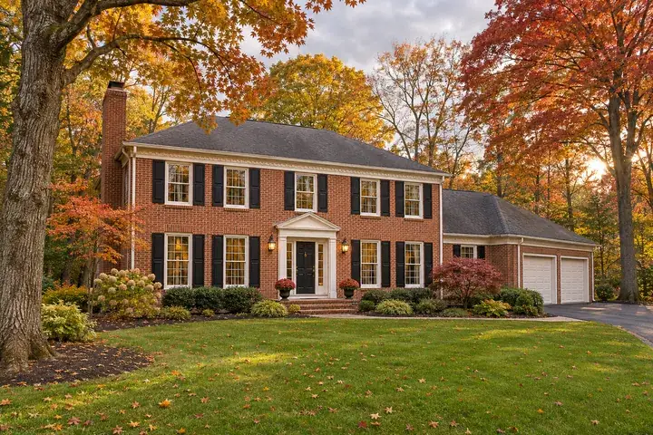

Home remodeling in Olney, MD.
Blue Hammer Remodeling is based in Olney, MD 20832. We plan kitchens, bathrooms and lower levels for homes in Olney and in Brookeville, Brinklow, Ashton, Sandy Spring and Laytonsville, from a small repair up to a full remodel.

Where an Olney remodel can start.
Three projects, and the conditions in the house that decide how each one goes.
Open the kitchen to the family room
If a wall separates the two rooms, it can be widened or removed once an on-site structural assessment shows what it carries. If there are soffits over the cabinets, what runs inside them is checked before they come out and the cabinets go to the ceiling. If the family eats in the kitchen, the island is sized for seating first.
Rework the primary bath
If a large tub goes unused beside a small shower, the two can trade space for one larger shower. If you still want a tub, a freestanding one takes less floor. If two sinks are wanted, the length of the vanity wall decides whether they fit.
Finish the lower level
If the basement has a door to the yard, the daylight side takes the main room. If drain lines for a bathroom were roughed in when the house was built, the bathroom goes there. If the space is partly finished, the existing framing and wiring are assessed before any of it is reused.
What we remodel in Olney.
Each service page goes deeper into the decisions to make first.
 Kitchen remodelingLayout, cabinetry, stone and lighting, planned around how you cook and gather.
Kitchen remodelingLayout, cabinetry, stone and lighting, planned around how you cook and gather. Bathroom remodelingPrimary suites, hall baths and powder rooms.
Bathroom remodelingPrimary suites, hall baths and powder rooms. Basements & interiorsLower levels, built-ins and interior rooms.
Basements & interiorsLower levels, built-ins and interior rooms.Starting smaller? We also take on small repairs and fixes around the house. A repair can be a first project with us, planned and written up the same way.
Ask about a repairWhat is different about remodeling in Olney.
Who reviews the work, and the factors that shape a budget here.
- County and WSSC. Olney is not one of Montgomery County’s municipalities, so the Department of Permitting Services issues the building permit. Plumbing and gas go through WSSC Water.
- Brookeville and Laytonsville. Both towns are on the County’s list of municipalities whose approval is required before the County application.
- Well and septic. The Olney Master Plan directs areas where community sewer is not supported to on-site septic systems. If the house has a septic system, the County evaluates added habitable space and added bedrooms against its capacity.
- Historic properties. Montgomery Planning’s map shows whether a property is designated. The County’s historic permit applies to exterior changes and is not required for interior work.
What shapes the budget here
| Project | What drives the cost |
|---|---|
| Kitchen opened to the family room | Structural design for the opening, the cabinet line, the counter material, and flooring patched or replaced across both rooms. |
| Primary bathroom | Whether drains move, the size of the shower and its glass, the tile, and wiring for a heated floor. |
| Hall bathroom, layout kept | Tile, vanity and fixtures, plus what is found behind the old tub surround. |
| Finished lower level | The number of rooms, a bathroom if one is added, moisture work, and heating and cooling for the new space. |
Your price comes from your drawings and selections and from the conditions in your house, set out in a written scope. The steps are on the process page.

Start close to home.
Olney is our base. Send the address and the room you want to change. A small repair is a fine first project too. The consultation covers priorities, a budget range and timing.
Schedule a ConsultationOlney remodeling questions.
Answers to what comes up before a first conversation.
See all service areasWhat happens at a walkthrough of the house?
We walk the rooms with you and measure them. We note where the water, gas and electrical lines run, since they decide how far a layout can move. Then the wish list is sorted into essential and optional, so the scope can fit the budget.
Can you remove the wall between my kitchen and family room?
It depends on what the wall carries, and that is settled by an on-site structural assessment. If the wall is load-bearing, the opening needs a structural design and a building permit. If it is not, the work is simpler, though the floor and ceiling still need patching where the wall stood.
Should we keep a tub in the primary bathroom?
Keep one if someone in the house uses it. If nobody does, the floor space can go to a larger shower or more storage. A hall bath elsewhere in the house can keep a tub for children and guests.
Does a walkout basement change the plan?
Yes. A door and full-size windows on one side bring daylight, so the main living space goes there and storage or mechanical rooms go to the back. Moisture and ceiling height are still checked before anything is drawn.
What should we have ready for the consultation?
The address, photos of the room, and a note on what is not working today. A budget range and the timing you have in mind help. If the house has a well or a septic system, mention it.
Who issues the permit in Olney, Brookeville and Laytonsville?
In Olney, Montgomery County’s Department of Permitting Services issues the building permit, and plumbing and gas go through WSSC Water. Brookeville and Laytonsville are incorporated towns. The County lists both among the municipalities whose approval is required before the County application.
Let’s talk about your home
Ready to make your space work better?
Tell us what you have in mind. We’ll review your project and talk through the next step together.